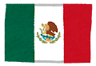
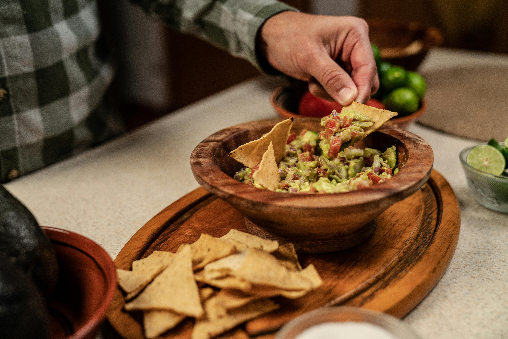
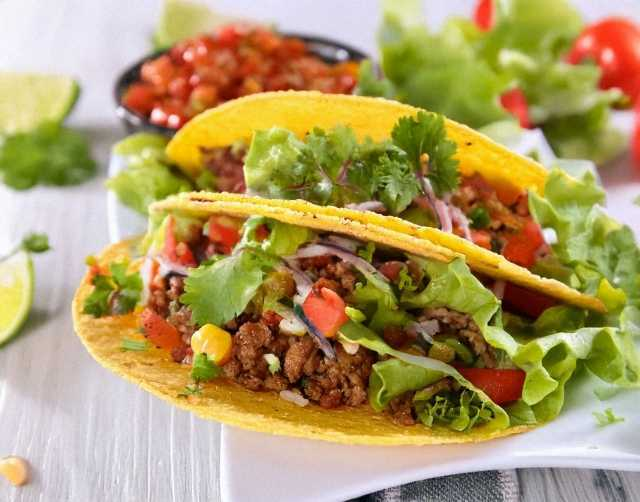

メキシコ

ワカモレ

ワカモレは、メキシコのアボカドを使ったディップです。
アボカドをつぶして、玉ねぎ・トマト・ライム・塩・パクチーなどを混ぜます。超簡単に言うと「アボカドのペーストサラダ」でトルティーヤチップスにつけて食べます！
タコス

タコスは、メキシコの代表的な手で食べる軽食です。
トルティーヤ（とうもろこしや小麦の薄いパン）に肉・野菜・チーズ・ソースなどをのせてパタンとたたんで食べます。